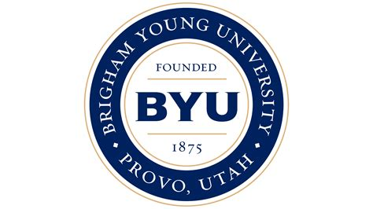

Director of Engineering 2ft Prosthetics, Sep 2020 - Sep 2021 · 1 yr 1 months
Orchestrate the annual 300$ engineering design competition consisting of 10 or more teams of students.
Oversee the higher-level engineering design competition teams for Bench to Bedside and 3 other major Competitions.
Director of Finance 2ft Prosthetics, Sep 2019 - Sep 2020 · 1 yr 1 months
Manage the club budget, insuring proper use of expenditure and teaching the leadership team how to access club funds.
Help organize and plan fundraisers for the 2ft Prosthetic organization in order to raise thousands of dollars for donating prosthetic legs to 3rd world countries.
Plan with leadership the yearly trip to the Dominican Republic where we have already donated 30+ prosthetic legs.
Assistant to the President | Office Manager Tonga Nuku'alofa Mission, The Church of Jesus Christ of Latter-day Saints, Aug 2017 - Aug 2019
As Assistant to the Mission President, I helping prepare and present training for all volunteers and volunteer leadership
As Assistant to the Mission President, I representing the mission president in public events and in responding to emergencies
As Office Manager, I oversaw operations and logistics for over 180 missionaries spread across twenty-plus islands.

Education
Brigham Young University Januray 2020 - August 2023 Bachelor's of General Studies: Buisness Minor: Entrepreneurship
Skills
Hard Skills
Tableau (See Portfolio)
HTML, CSS, Bootstrap (I Programmed this Website!)
Excel Solver, Pivot Tables, and Charts
Visual Basic for Applications (VBA) Programming in Excel